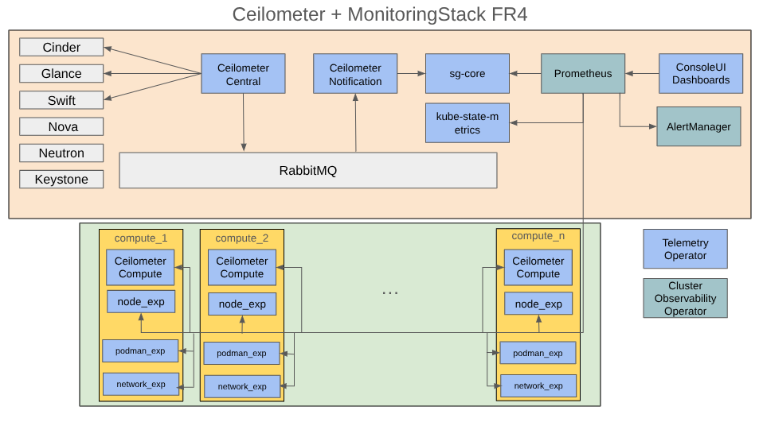

RHOSO architectural overview
This section provides a detailed look into Red Hat OpenStack Services on OpenShift (RHOSO) architecture, with a particular focus on its observability components. Understanding this architecture is crucial for effectively managing, monitoring, and troubleshooting your RHOSO environment.
Core Architectural Components
The RHOSO observability architecture leverages a hybrid approach, combining established OpenShift tooling with native OpenStack telemetry solutions. This integration ensures robust metric collection and logging across the entire stack.

OpenShift-Native Observability Components
Within RHOCP, RHOSO utilizes several core OpenShift observability services:
-
Cluster Observability Operator (COO): COO is an optional component of the OpenShift Container Platform designed for creating and managing highly customizable monitoring stacks.
-
Cluster Logging Operator (CLO): CLO provides a set of APIs to control collection and forwarding of logs from all pods and nodes in a cluster. This includes application logs (from regular pods), infrastructure logs (from system pods and node logs), and audit logs (special node logs with legal/security implications)
-
OpenShift Console UI: provides a unified graphical interface for visualizing metrics, logs, alerts and dashboards in the OpenShift observability stack.
-
Telemetry Operator: TO acts as a crucial bridge, integrating OpenStack-specific telemetry data into the OpenShift observability ecosystem. It ensures that metrics and logs from OpenStack services are properly collected and exposed to the OpenShift monitoring tools.
OpenStack-Native Telemetry Components
While leveraging OpenShift’s strengths, RHOSO also retains key OpenStack telemetry solutions that have been proven and familiar to OpenStack administrators:
-
Ceilometer: the OpenStack telemetry service is a data collection service that provides the ability to normalise and transform data across all current OpenStack core components Ceilometer continues to play a role in gathering OpenStack-specific metrics.
-
AODH: the OpenStack Alarming service, provides a service that enables the ability to trigger actions based on defined rules against metric or event data collected by Ceilometer
Deployment and Scope
The services comprising the RHOSO observability architecture are deployed across different layers of your infrastructure:
-
Within Red Hat OpenShift Container Platform (RHOCP): services like COO, CLO, and the Telemetry Operator run directly within the OpenShift cluster, managing the overarching observability framework.
-
On RHOSO Dataplane Nodes: services on your OpenStack Dataplane nodes are responsible for providing node-specific metrics and logs ensuring full coverage of your data plane.